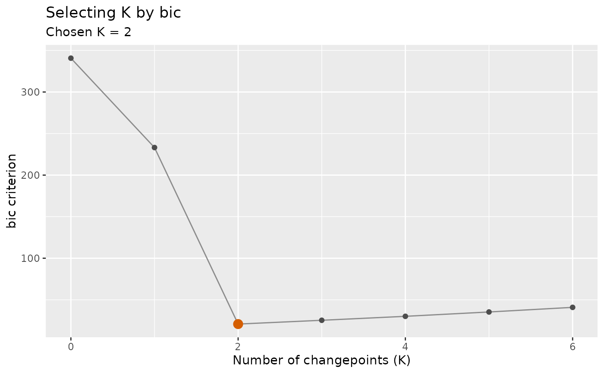
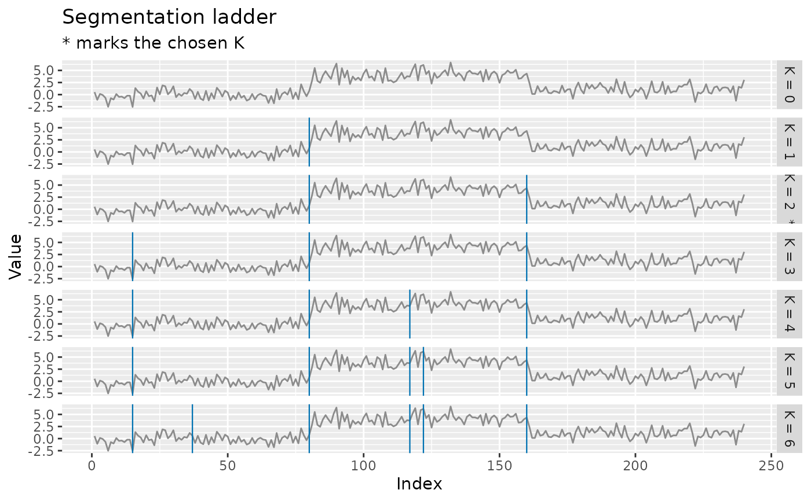

Builds a ladder of candidate segmentations with \(K = 0, 1, \ldots\) changepoints and scores each one, returning the chosen \(K\), the criterion curve behind the choice, and the fitted result at that \(K\). Five criteria are available, including the consistent sample-splitting cross-validation of Zou, Wang and Li (2020) and the segment-length mBIC of Zhang and Siegmund (2007).
Usage
cpt_select(
x,
method = "pelt",
criterion = c("bic", "mbic", "aic", "crops_elbow", "cv", "stability"),
k_max = 20,
folds = 5,
B = 100,
change_in = "mean",
index = NULL,
seed = NULL,
...
)
# S3 method for class 'ggcpt_selection'
print(x, ...)
# S3 method for class 'ggcpt_selection'
tidy(x, ...)
# S3 method for class 'ggcpt_selection'
autoplot(
object,
plot_type = c("criterion", "segmentation", "ladder"),
max_facets = 12,
...
)Arguments
- x
A numeric vector, or a
ggcptobject (its series and method are used).- method
Detection method used to build the candidate ladder. Defaults to
"pelt". Taken fromxwhen it is aggcpt. The penalised methods ("pelt","binseg","segneigh","amoc","fpop") give a full nested ladder; the search-based methods tune themselves by an internal criterion and largely ignorepenalty, so their ladder collapses to one or two rungs and the function warns.- criterion
Which criterion selects \(K\):
"bic"Gaussian BIC over the ladder.
"mbic"the modified BIC of Zhang and Siegmund (2007), \(3K\log n + \sum_i \log(l_i/n)\), which depends on the segment lengths \(l_i\) and so cannot be expressed by
cpt_penalty()'s function of \(n\) and \(k\) alone. This is the one place in the package where the real Zhang–Siegmund penalty is computed."aic"Gaussian AIC over the ladder. Its \(2k\) penalty does not grow with \(n\), so it over-selects changepoints — often taking every rung offered. Included because people ask for it and because seeing the curve is instructive;
"bic"or"mbic"is the better default."crops_elbow"the knee of the CROPS cost-against-\(K\) curve, made an explicit rule (maximum distance from the chord joining the endpoints — the standard Kneedle construction) rather than something eyeballed off a plot.
"cv"order-preserved sample-splitting cross-validation (COPPS) via crossvalidationCP. This is the criterion with a consistency guarantee. Note that
cpss, the authors' own package, was removed from CRAN; crossvalidationCP is the supportable route."stability"the \(K\) whose changepoints are re-detected most often under within-segment bootstrap resampling. A robustness criterion, not a model-selection one; use it to cross-check the others.
- k_max
Largest number of changepoints considered. Defaults to
20, capped atfloor(n / 4).- folds
Folds for
criterion = "cv". Defaults to5;2gives the original COPPS split.- B
Bootstrap replicates for
criterion = "stability". Defaults to100.- change_in
Passed to the detector. Defaults to
"mean".- index
Optional time index (a vector of dates, or a
ts,xts,zooortsibblepassed asx), carried onto the chosen fit sotidy()andautoplot()report the changepoint on your scale rather than as a position. Inherited fromxwhenxis an indexedggcpt.- seed
Optional seed.
- ...
Additional arguments passed to
cpt_detect()when the ladder is built by repeated detection.- object
A
ggcpt_selectionobject (forautoplot()).- plot_type
"criterion"(the criterion against \(K\), with the choice marked),"segmentation"(the series with the chosen segmentation) or"ladder"(small multiples showing how the segmentation coarsens as \(K\) falls — the display that makes the choice inspectable rather than asserted).- max_facets
Maximum number of rungs drawn by
plot_type = "ladder". Defaults to12.
Value
A ggcpt_selection object: a list with
criterion_table (one row per candidate \(K\): k,
value, cost, chosen, and a cpts
list-column), k (the chosen number), fit (the
ggcpt at that \(K\)), criterion and data.
Methods: print(), tidy() and autoplot() with
plot_type = "criterion", "segmentation" or
"ladder".
References
Zou C, Wang G, Li R (2020). “Consistent selection of the number of change-points via sample-splitting.” The Annals of Statistics, 48(1), 413–439. doi:10.1214/19-AOS1814 .
Zhang NR, Siegmund DO (2007). “A modified Bayes information criterion with applications to the analysis of comparative genomic hybridization data.” Biometrics, 63(1), 22–32. doi:10.1111/j.1541-0420.2006.00662.x .
Haynes K, Eckley IA, Fearnhead P (2017). “Computationally efficient changepoint detection for a range of penalties.” Journal of Computational and Graphical Statistics, 26(1), 134–143.
Examples
set.seed(2026)
x <- c(rnorm(80), rnorm(80, 4), rnorm(80, 1))
sel <- cpt_select(x, criterion = "bic", k_max = 6)
sel
#> ggcpt_selection (criterion: bic, method: pelt)
#> Candidates scored: K = 0 to 6
#> Chosen K: 2
#> Locations: 80, 160
#>
#> # A tibble: 7 × 4
#> k value cost chosen
#> <int> <dbl> <dbl> <lgl>
#> 1 0 341. 335. FALSE
#> 2 1 233. 217. FALSE
#> 3 2 20.8 -6.60 TRUE
#> 4 3 25.4 -13.0 FALSE
#> 5 4 30.1 -19.2 FALSE
#> 6 5 35.3 -24.9 FALSE
#> 7 6 40.9 -30.3 FALSE
ggplot2::autoplot(sel)

ggplot2::autoplot(sel, plot_type = "ladder")
